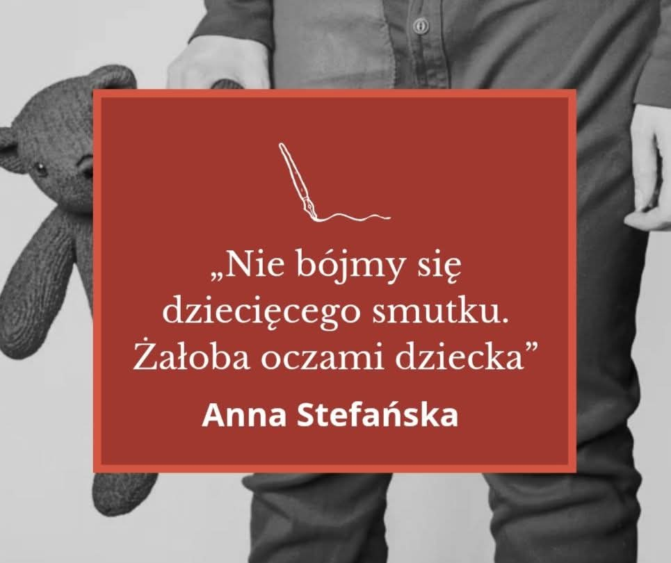

{% if post.category %}
{{ post.category | escape }}
{% endif %}{{ post.title | escape }}
{% if post.summary %}{{ post.summary | escape }}
{% endif %} Czytaj artykułZatrzymaj się na chwilę
Artykuły, refleksje i materiały psychoedukacyjne – pisane z uważnością na emocje, relacje i codzienne doświadczenia.
Najnowsze teksty
{{ post.category | escape }}
{% endif %}{{ post.summary | escape }}
{% endif %} Czytaj artykułZ naszego archiwum

Emocje i dzieci
Dzieci również doświadczają żałoby. Jak wspierać dziecko po stracie i dlaczego obecność dorosłego jest tak ważna?
Czytaj artykułMasz pytania?
Jeśli potrzebujesz wsparcia lub chcesz umówić spotkanie, zapraszam do kontaktu.